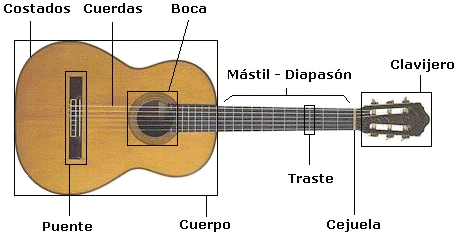
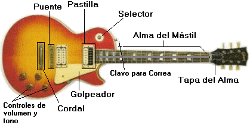

Bueno, si queremos aprender a tocar la guitarra tenemos que conocer las partes o elementos que constan de ella. Voy a poner las partes de los dos tipos de guitarras, acústica y eléctrica, al
primer tipo es la que recomiendo para aprender, ya que es una guitarra clásica y la segunda es una Les Paul. Asi que es hora de ir conociendo las partes de la guitarra y espero y te sirvan de utilidad. Ya no tarda en cargarse las imágenes...
________

Cuerdas
La guitarra consta de seis cuerdas que toman su nombre según el sonido que producen cuando se tocan al aire (sueltas) y se enumeran de abajo hacia arriba, tomando como referencia la
posición normal en que se toma la guitarra para tocar. La cuerda más delgada es la número 1 y la más gruesa es la 6ta. En las clásicas o flamencas, las tres agudas son de nylon monofilamento
y las graves tienen un núcleo multifilamento y un entorchado de cobre (plateado, cobre u otra aleación). En las eléctricas las cuerdas tienen núcleo de acero, el entorchado es de aleación
níquel/hierro, acero niquelado u otro metal o aleación.
Clavijero
Su función es la de sostener y tensar las cuerdas, para ello consta de un mecanismo compuesto por tornillos sinfín que hacen girar un eje donde van enrolladas las cuerdas (estas son las clavijas),
estos ejes poseen un agujero central por el que se introduce la cuerda. Algunos constructores utilizan diseños personales que permiten distinguir sus instrumentos. La parte frontal es de madera laminada.
La Ceguela
Es una pieza de forma alargada que va incrustada en la parte superior del diapasón, entre éste y el clavijero. Normalmente es de hueso o materiales sintéticos duros (tales como el grafito). La cejuela
controla la altura de las cuerdas al aire sobre el primer traste y permite la separación de las cuerdas, fijándolas gracias a unas ranuras que lleva en su parte frontal.
Diapason-Mastil
El Diapasón es una pieza de ébano alargada de forma aplanada que cubre el Mástil, éste tiene una o dos ranuras en las que encajan en la caja y es de madera dura de arce, por la parte frontal.
Esta dividido en espacios delimitados por unas barras de metal incrustadas llamadas Trastes, generalmente a éstos espacios se les llama igual. Cada espacio (o traste) representa una nota musical.
Cuerpo
El Diapasón es una pieza de ébano alargada de forma aplanada que cubre el Mástil, éste tiene una o dos ranuras en las que encajan en la caja y es de madera dura de arce, por la parte frontal.
Esta dividido en espacios delimitados por unas barras de metal incrustadas llamadas Trastes, generalmente a éstos espacios se les llama igual. Cada espacio (o traste) representa una nota musical.
Puente
El Puente es una pieza alargada y estrecha situada sobre la Tapa Superior a cierta distancia de la Boca. Es donde se fijan las cuerdas antes de colocarlas y tensarlas en el clavijero. El sistema de colocación
es similar al del clavijero. Para graduar la altura de las cuerdas en las acústicas en la parte superior del puente nos encontramos con la Selleta (cejuela inferior) y en las eléctricas el mismo puente puede graduarlas,
existen 2 principales tipos de puentes: el Tune-O-Matic (usado en las Les Paul) y el de las selletas individuales (usado en las Stratocaster - el que se puede controlar la altura de las cuerdas por separado). Algunas guitarras
eléctricas, como las Les Paul, llevan un soporte llamado Cordal que es el que sujeta las cuerdas a la caja de la guitarra.
Pastilla
Dispositivo con un bobinado (puede ser de bobina única como en la Strato o de dos como la Les Paul) de alambre delgado que transforma el sonido en señales eléctricas. Las pastillas se controlan mediante un Selector (o conmutador)
de dos o tres vías, que permite usar una u otra, o dos a la vez. También tienen un control de volumen y otro de tono.
Alma del mastil(Varilla Tensora)
Esta las llevan todas las guitarras de cuerdas de acero y se encuentra a lo largo del Mástil, debajo del Diapasón. Esta compensa la curvatura provocada por la tensión de las cuerdas. La varilla se ajusta por
medio de una tuerca hexagonal que se encuentra en el extremo más próximo a la caja o del otro extremo del Mástil (en el clavijero - este extremo es ocultado por la Tapa del Alma, que es de madreperla o de algún material sintético).
Golpeador
Protegen el acabado de la guitarra y esta colocado en la parte media baja de la guitarra (suele ser de concha de tortuga sintética).